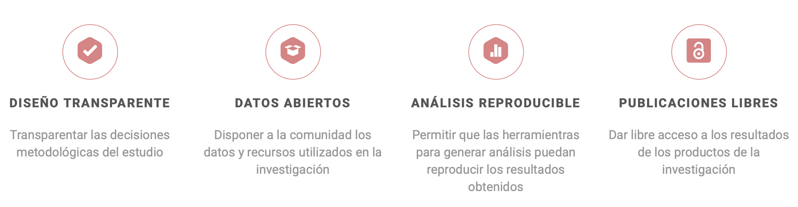
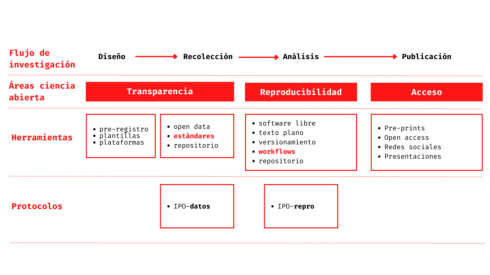
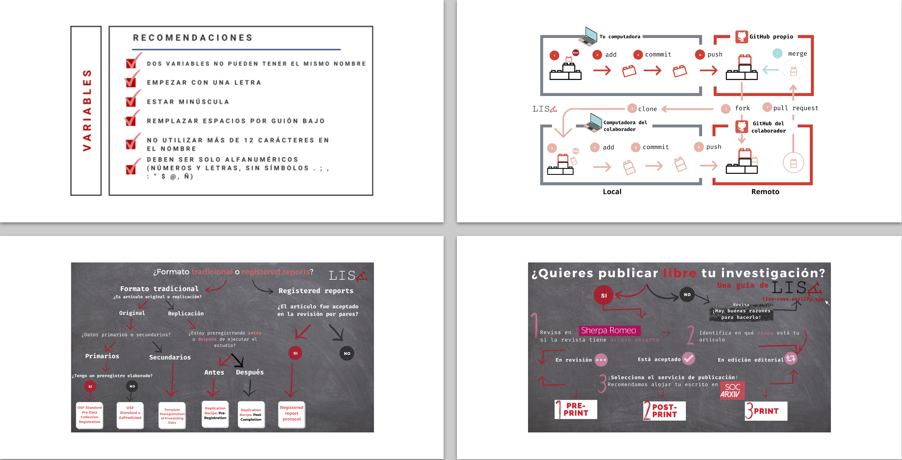
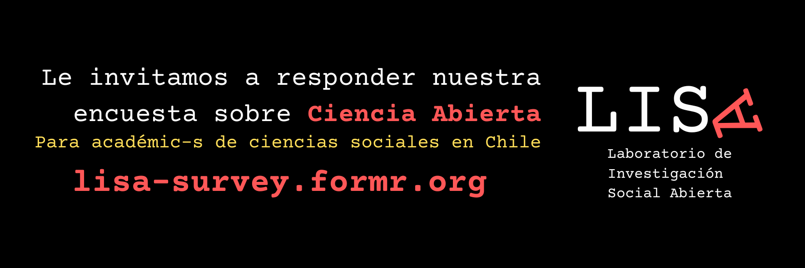

Planificación Actividades 2025 Laboratorio de Ciencia Social Abierta
Introducción
El Laboratorio de Ciencia Social Abierta nace en el año 2020, como iniciativa del profesor Juan Carlos Castillo - investigador principal COES - con el propósito de ser una guía para el desarrollo de una ciencia social abierta y reproducible para la comunidad científica de ciencias sociales. Uno de sus objetivos ha sido generar una propuesta de trabajo que combina conceptos y herramientas para la apertura científica en las distintas etapas del proceso de investigación, organizado en cuatro componentes: (1) diseño transparente, (2) apertura de datos, (3) análisis reproducibles y (4) publicaciones libres. Estos componentes representan cómo los cientistas sociales podemos contribuir con la apertura de los distintos momentos del proceso de investigación.

En el ámbito de las ciencias sociales, los esfuerzos por incrementar la apertura de los procesos de investigación han sido escasos y su presencia ha sido predominante en las comunidades científicas de habla inglesa. Por este motivo, LISA propone contribuir a la comunidad de ciencias sociales de habla hispana a través de una serie de herramientas que contribuyan a incrementar la apertura de las investigaciones científicas. Estos esfuerzos se encuentran recogidos en un sitio web de libre acceso, creado y mantenido por el equipo de investigación de LISA.
Entre las iniciativas empujadas por LISA se encuentra el desarrollo del protocolo IPO (Input-Procesamiento-Output), con el fin de facilitar la implementación de prácticas de investigación reproducibles. El protocolo IPO busca establecer orientaciones mínimas respecto a cómo y cuáles son los pasos a seguir en la organización de información de proyectos de investigación, estableciendo una organización de carpetas y archivos para la preparación y documentación para la apertura de datos. Al día de hoy, se han desarrollado dos versiones del protocolo IPO-datos e IPO-reproducibilidad, ambas accesible mediante el sitio web de LISA.

Además, en su sitio Web, LISA pone a disposición varios insumos para facilitar y guiar la implementación de prácticas en diseño transparente, apertura de datos, análisis reproducible y publicaciones libres. Estos insumos consisten en entradas de blogs, cápsulas de video e infografías.

LISA ha llevado a cabo iniciativas de investigación mixta para dar con un diagnóstico del conocimiento, las prácticas y la valoración de la Ciencia Abierta en las ciencias sociales en Chile. Este proyecto fue financiado mediante un fondo Mini-Coes, y consistió en una investigación mixta que integró: a) En su fase cualitativa, el análisis de entrevistas 13 a investigadores; b) En su fase cuantitativa, el diseño de una encuesta (CAIS) sobre temáticas claves para la ciencia abierta, desde el cual se realizó un análisis descriptivo. El artículo resultante de la investigación se encuentra en edición y su envío está considerado para el primer semestre como parte de un special issue en temas de ciencia abierta de la revista Publications (Scopus).

Actividades Planificadas
Las actividades propuestas buscan construir sobre ello, creando espacios para la difusión y discusión pública sobre políticas de Ciencia Abierta en el país. De tal forma, LISA propone contribuir con un espacio que abra el debate y plantee medidas para reforzar el compromiso de COES con los principios de la Ciencia Abierta.
| 1 | Publicación Artículo Ciencia Abierta en Chile | A fines del año pasado la revista Publications abrió un llamado para un Special Issue titulado Open Science: Developments and Disinformation Regarding Scientific Information. Este llamado entrega una oportunidad para la publicación y difusión de la investigación desarrollada por LISA. Ya en enero se inició una sistematización de los estudios cuantitativos y cualitativos sobre Ciencia Abierta en Chile, lo que culminó en la redacción de un borrador inicial del artículo. Durante el mes de marzo se comenzará, además, el trabajo de traducción y edición al inglés. Durante Marzo se enviará un resumen a la revista, con la finalidad de presentar interés en su publicación y recibir retroalimentación previa. Luego, se continuará trabajando en refinar el artículo, con miras de llegar a una versión final que será enviada, a más tardar, durante junio del 2025. |
| 2 | Actualización Sitio Web LISA | Actualmente, LISA cuenta con un sitio web alojado en la plataforma Netlify y diseñado a partir de una plantilla Hugo. Sin embargo, nuevos desarrollos de softwares han hecho que este esquema esté pronto a quedar obsoleto. Por ello, se hará la migración del sitio web mediante Quarto. Quarto es un sistema de publicación científica y técnica de código abierto que presenta una serie de ventajas sobre Hugo. Al estar diseñado específicamente para investigación y visualización de datos, proporciona una integración más fluida con R, Markdown y otros lenguajes de programación, simplificando flujos de trabajo. De tal forma, ofrece un ecosistema unificado para la construcción sencilla y elegante de sitios web técnicos y académicos, además de facilitar la creación de visualizaciones interactivas de datos. |
| 3 | Construcción Visualizador CAIS | Dado que un sitio web en Quarto ofrece un flujo de trabajo óptimo para la visualización de datos, se abre una oportunidad para construir una plataforma que presente de manera dinámica los resultados de la investigación de LISA. Por ello, se construirá una visualizador con los resultados de CAIS. Esto permitirá el acceso abierto e interactivo a datos sobre conocimiento, prácticas y valoración de la Ciencia Abierta en la comunidad de las ciencias sociales en Chile, en línea con los esfuerzos de COES por la divulgación de su investigación. |
| 4 | Cápsula de Video de Divulgación | Además del visualizador, se propone la realización de cápsulas de video que sirvan para la divulgación de los resultados de investigación, así como de los protocolos desarrollados por LISA. Estas cápsulas estarán alojadas en el nuevo sitio web de LISA. |
| 5 | Realización de Talleres sobre Ciencia Abierta | En concordancia con el compromiso de COES con la formación continua de capital humano en las humanidades y ciencias sociales, se propone la realización de tres talleres sobre Ciencia Social Abierta destinados a estudiantes de pre y postgrado. En estos talleres se entregarán a los estudiantes las herramientas para incorporar dentro de su trabajo como investigadores e investigadoras los principios de la Ciencia Abierta difundidos por LISA, incluyendo el diseño transparente, la apertura de datos, el análisis reproducibles y las publicaciones libres. Dos talleres, uno por semestre, estarán orientados a estudiantes de pre y postgrado de la Facultad de Ciencias Sociales de la Universidad de Chile. Tentativamente, estos talleres se realizarán en los meses de abril y noviembre. Durante el segundo semestre, y en consonancia con los esfuerzos de descentralización de COES, se propone replicar este taller en universidades regionales con qué COES haya establecido vínculos previos. De tal modo, posibles locaciones para esta actividad podrían ser la Universidad de Tarapacá en Arica, la Universidad de O'Higgins en Rancagua, la Universidad de la Frontera en Temuco y la Universidad Austral en Valdivia, y la Universidad de los Lagos en Osorno. |
| 7 | Presentación Resultados de Investigación y Debate con ANID | Uno de los propósitos de la investigación sobre Ciencia Abierta en Chile fue producir insumos para el debate y la confección de políticas públicas que promuevan la transparencia, la apertura y la reproducibilidad en investigaciones financiadas con dineros estatales. Por ello, y en concordancia con el compromiso de COES de generar vínculos permanentes con instituciones públicas, así como de conectar con actores sociales y políticos que permitan una mejor toma de decisiones, es que se propone presentar los resultados finales de la investigación en un conversatorio que incluya actores relevantes en este debate. El conversatorio se realizaría en el segundo semestre, tentativamente en el mes de septiembre. Los resultados de la investigación podrían ser comentados por representantes de la ANID, que ha promovido una política de acceso abierto en los últimos años, así como por investigadores interesados en el debate. |
| 8 | Mantención Insumos Encuesta CAIS | La Encuesta CAIS aún necesita trabajo para ser plenamente utilizable por la comunidad. Por ello, se dedicará tiempo a la mantención de su repositorio, base de datos y libro de códigos. |
| 9 | Participación en la prensa | Por último, se planifica participación enprensa como otra forma de incidir en el debate público y en la toma informada de decisiones. Por ello, se sugiere la redacción de columnas de opinión que aborden la problemática de la Ciencia Abierta en Chile, la que se espera sea publicada en algún medio de circulación nacional. |
El detalle de la planificación anual se puede encontrar aquí
Presupuesto
La mayor parte de la solicitud presupuestaria consiste en el pago de honorarios del asistente de investigación del Observatorio. El Asistente destinará 22 horas semanales a la gestión y coordinación de las actividades señaladas entre los meses de abril y noviembre. Además, será el encargado de desarrollar y mantener el sitio web del observatorio y su visualizador.
El resto del presupuesto se compone principalmente de coffee breaks para las instancias de formación y divulgación propuestas. Asimismo, se consideran viáticos para cubrir los gastos relacionados al viaje a una universidad regional durante el segundo semestre.
| Item | Detalle | Monto |
| Honorarios Asistente LISA | Honorarios abril-noviembre por un monto de $770.000 mensuales | $6.160.000 |
| Talleres Ciencia Abierta FACSO | 2 x Coffee Break 15 personas | $400.000 |
| Taller Ciencia Abierta Universidad Regional | Coffee Break 15 personas | $200.000 |
| Viáticos Equipo de Investigación (Viaje, Hospedaje y Alimentación para dos personas) | $1.000.000 | |
| Conversatorio Ciencia Abierta | Coffee Break 25 personas | $350.000 |
| Cápsulas de Difusión | Pago de audiovisual | $300.000 |
| Otros | Totebags y marcapáginas LISA | $500.000 |
| Total | $8.910.000 |